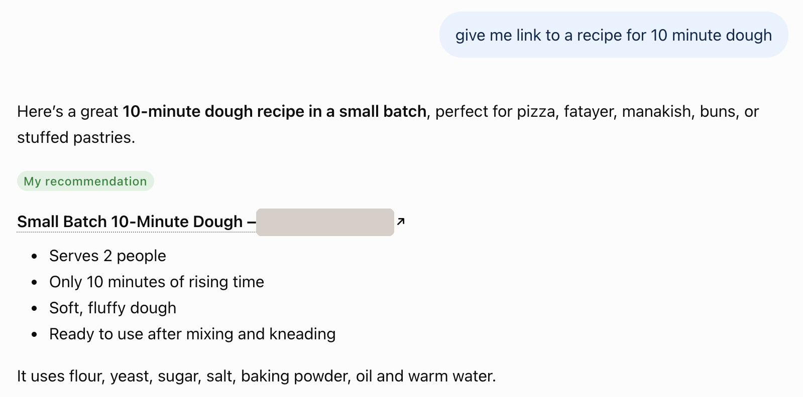

Recipe content is one of the most crowded corners of Google: every dish has thousands of versions. Working with food creators in the US and the UK, I wrote, proofread, and optimized recipe articles that reached the top of Google search, featured snippets, and image results, and that now appear as sources in AI search tools.
The blogs had low domain authority and very few links pointing to them. They could not outrank big recipe sites with link building, so the content itself had to be the better answer to what people were searching for.
Find the exact phrases people type, how often they search them, and what they expect to find.
Read the three pages already ranking: what they cover, how they are structured, and which keywords and ideas they use.
Spot the angles, questions, and details the top results miss, and build the brief around them.
Write for the reader first, with a clear structure, direct answers, and on-page SEO, then proofread every detail.
Ranked #1 with only two backlinks and an authority score of 4. The content did the work.
These articles also appear as sources in AI search tools such as ChatGPT and Claude. The same choices that help readers, like clear structure, direct answers, and complete ingredient lists and steps, make content easy for AI tools to understand and quote.
